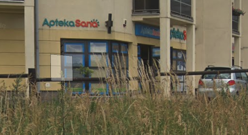

Jesteśmy rodzinną firmą z kilkunastoletnią tradycją. Zaczynaliśmy jako jedna apteka małym osiedlu. Dziś pomagamy wielu tysiącom pacjentów w 2 lokalizacjach. Dzięki rewelacyjnemu zaopatrzeniu oraz niskim cenom wielu z nich dojeżdża do nas z okolicznych województw.
W naszej firmie przygotowujemy leki recepturowe, także jałowe.
Godziny otwarcia: Pon.-pt.: 8:00 - 19:00 Sob.: 9:00 - 14:00
tel: 89 676 12 12
📍Olsztyn, Tęczowy Las 5 Lok.U3
Godziny otwarcia: Pon.-pt.: 8:00 - 19:00 Sob.: 9:00 - 14:00
tel: 89 612 37 37